要求されたパッケージ ggplot2 をロード中です 12 ggpubrで可視化
12.1 ggpubrパッケージ
ggpubrパッケージは，ggplot2パッケージのグラフをさらにカスタマイズするためのパッケージで，論文や書籍に掲載するためのグラフを作成するのに便利です。 ggpubrを使うためにはlibrary(ggpubr)でパッケージを読み込みます。 インストールしていない場合は，install.packages("ggpubr")を実行してから，再度読み込んでください。
12.1.1 ggpubrのヘルプ
ggplot2パッケージは便利だけれど，出版物にグラフを掲載するためにはいろいろ調整する必要がでてきます。ただそれは初心者には難しいので，ggpubrを使いましょう，とのことです。 ggpubrのヘルプは，?ggpubrで見ることができます。
12.1.2 ggpubrのドキュメント
ggpubrのドキュメントは，公式サイトにあります。 そこにある例を参考にしながら，ggpubrの機能を学んでいきましょう。
12.2 ggpubrでグラフ作成
密度プロットを作成するには，ggdensity()関数を使います。 ggplot2パッケージとは違い，aes()は使いません。 引数が多いように思えますが，ほとんどコピペで使い回せるので，基本形だけ覚えておけば大丈夫です。
密度プロットを作図するためのデータを作成します。 ここでは性別と体重のデータを400名分作成します。
ggpubr::ggdensity()で密度プロットを作成します。
ggdensity(wdata, # データフレーム
x = "体重", # 体重の分布
add = "mean", # 平均値を表示
rug = TRUE, # 密度関数の下にデータ分布を表示
color = "性別", fill = "性別",
palette = c("#00AFBB", "#E7B800")
)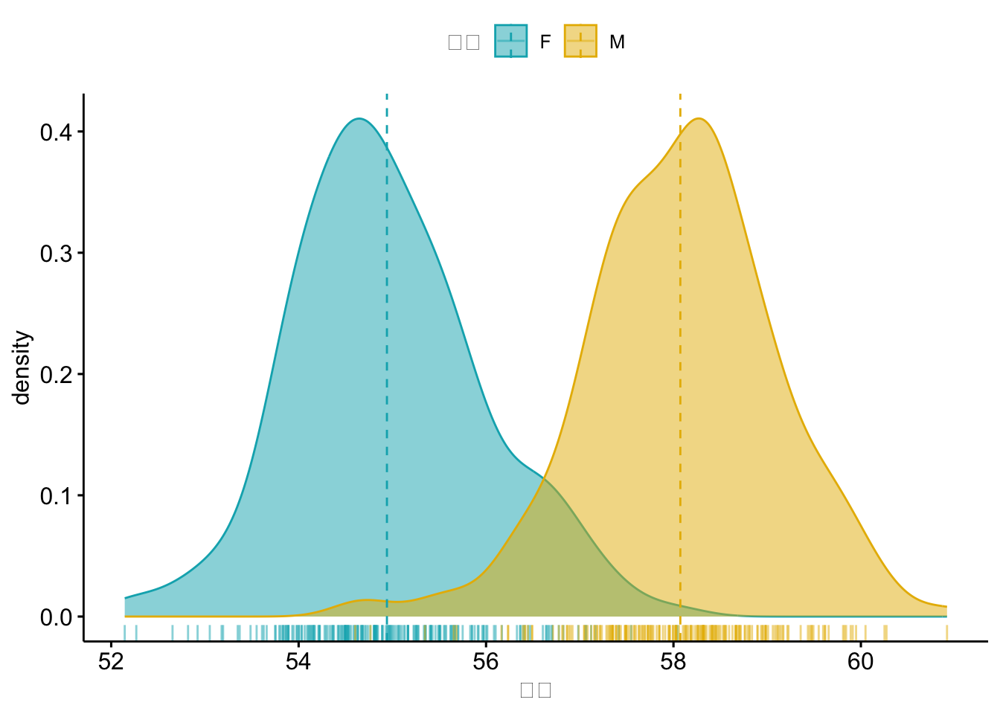
次に同じ1変数のグラフであるヒストグラムを作成します。 ヒストグラムは，ggpubr::gghistogram()関数を使います。
gghistogram(wdata,
x = "体重", # 体重
add = "mean", # 平均値を表示
rug = TRUE, # x軸にデータの分布
color = "性別", # 枠の色を性別ごと
fill = "性別", # グラフの中の色を性別ごと
palette = c("#00AFBB", "#E7B800")
)Warning: Using `bins = 30` by default. Pick better value with the argument
`bins`.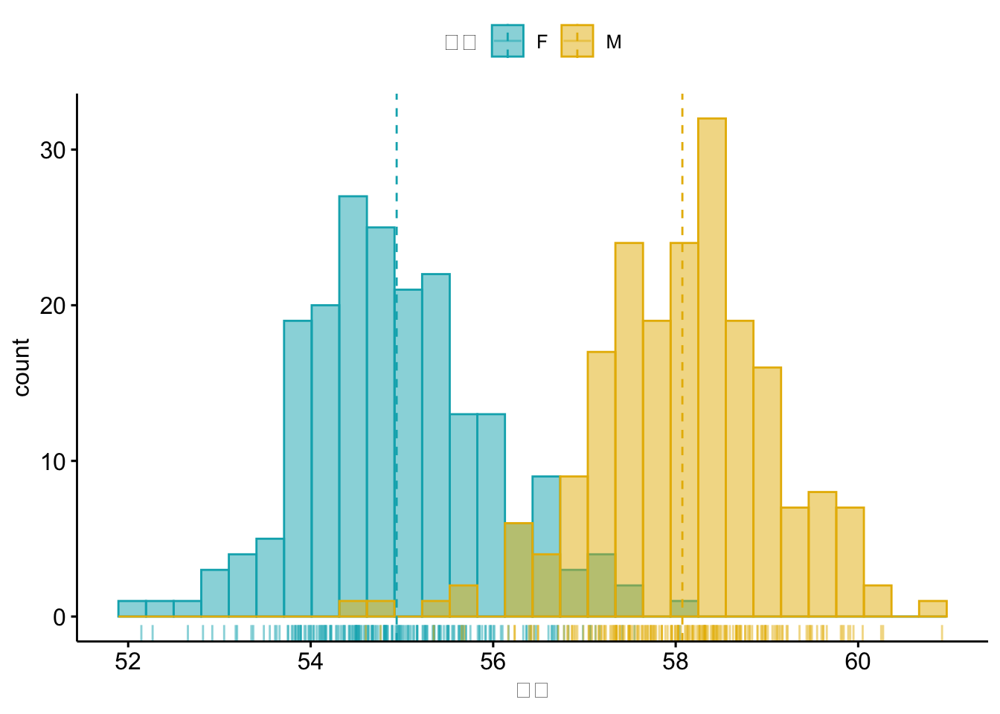
次は，横軸にカテゴリー変数，縦軸に連続変数となる2変数のためのグラフをggpubrで作ってみます。 ここでは，ToothGrowthデータという歯の成長に関するデータを使います。 箱ひげ図を作るには，ggpubr::ggboxplot()関数を使います。
data("ToothGrowth") # 歯の成長データ
df <- ToothGrowth
head(df, 4) |> knitr::kable(align='ccc') |> kableExtra::kable_styling(font_size = 12)| len | supp | dose |
|---|---|---|
| 4.2 | VC | 0.5 |
| 11.5 | VC | 0.5 |
| 7.3 | VC | 0.5 |
| 5.8 | VC | 0.5 |
箱ひげ図を作成します。 先ほどとは違い2変数のグラフなので，データフレームを指定した後に，xとyを指定します。
p <- ggboxplot(df, # データフレーム
x = "dose", y = "len", # 2変数を指定
color = "dose", # 色分けはdoseごと
palette =c("#00AFBB", "#E7B800", "#FC4E07"), # 色指定
add = "jitter", # データを重ならないように
shape = "dose" # 点の形ををdoseごとに
)
print(p)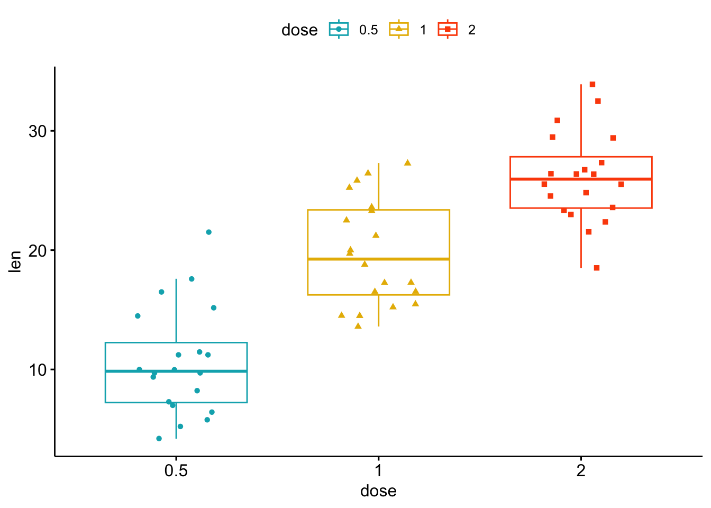
心理学系論文でよく利用されるグループ間の差の検定結果を載せる。
my_comparisons <- list(c("0.5", "1"), c("1", "2"), c("0.5", "2"))
# Add pairwise comparisons p-value
p + stat_compare_means(comparisons = my_comparisons) +
stat_compare_means(label.y = 50)Warning in wilcox.test.default(c(4.2, 11.5, 7.3, 5.8, 6.4, 10, 11.2, 11.2, :
タイがあるため、正確な p 値を計算することができませんWarning in wilcox.test.default(c(4.2, 11.5, 7.3, 5.8, 6.4, 10, 11.2, 11.2, :
タイがあるため、正確な p 値を計算することができませんWarning in wilcox.test.default(c(16.5, 16.5, 15.2, 17.3, 22.5, 17.3, 13.6, :
タイがあるため、正確な p 値を計算することができません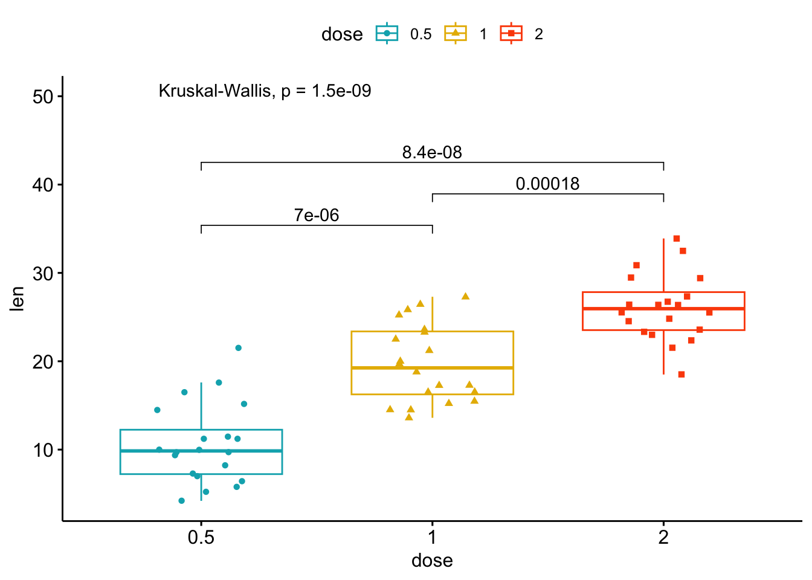
箱ひげ図とバイオリン・プロットを組み合わせグラフは，ggviolin()関数で作成できる。
ggviolin(
df,
x = "dose",
y = "len",
fill = "dose",
palette = c("#00AFBB", "#E7B800", "#FC4E07"),
add = "boxplot",
add.params = list(fill = "white")) +
stat_compare_means(comparisons = my_comparisons, label = "p.signif") + # 有意水準を追加
stat_compare_means(label.y = 50) # p値を追加Warning in wilcox.test.default(c(4.2, 11.5, 7.3, 5.8, 6.4, 10, 11.2, 11.2, :
タイがあるため、正確な p 値を計算することができませんWarning in wilcox.test.default(c(4.2, 11.5, 7.3, 5.8, 6.4, 10, 11.2, 11.2, :
タイがあるため、正確な p 値を計算することができませんWarning in wilcox.test.default(c(16.5, 16.5, 15.2, 17.3, 22.5, 17.3, 13.6, :
タイがあるため、正確な p 値を計算することができません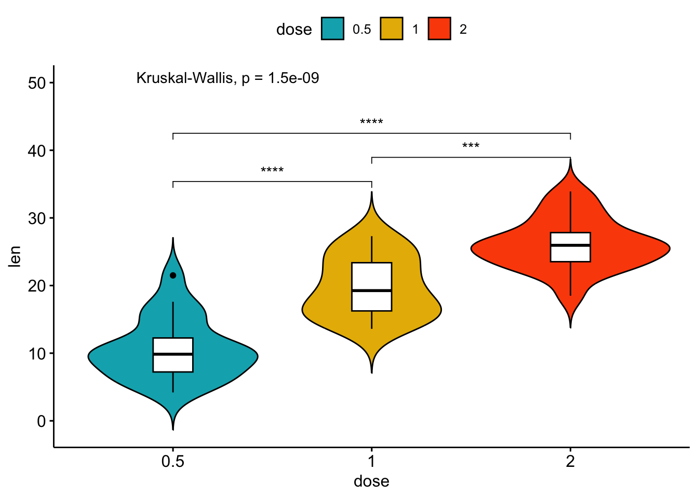
12.3 棒グラフ
グループ化した変数での色分けを変更してみよう， 並び替えはグループごとではなく，グローバルに行われます。 ここでは，mtcarsデータという車のデータを使います。
data("mtcars") # 車のデータ
dfm <- mtcars
# `cyl`を因子型に変換
dfm$cyl <- as.factor(dfm$cyl)
# 変数名を追加
dfm$name <- rownames(dfm)
# データの確認
head(dfm[, c("name", "wt", "mpg", "cyl")]) |>
knitr::kable(align='clccc') |>
kableExtra::kable_styling(font_size = 10)| name | wt | mpg | cyl | |
|---|---|---|---|---|
| Mazda RX4 | Mazda RX4 | 2.620 | 21.0 | 6 |
| Mazda RX4 Wag | Mazda RX4 Wag | 2.875 | 21.0 | 6 |
| Datsun 710 | Datsun 710 | 2.320 | 22.8 | 4 |
| Hornet 4 Drive | Hornet 4 Drive | 3.215 | 21.4 | 6 |
| Hornet Sportabout | Hornet Sportabout | 3.440 | 18.7 | 8 |
| Valiant | Valiant | 3.460 | 18.1 | 6 |
# 作図
ggbarplot(dfm,
x = "name", y = "mpg", # 2変数を指定
fill = "cyl", # cylごとに色替え
color = "white", # 枠の色は白
palette = "jco", # 論文用色見本
sort.val = "desc", # 降順で並び替え
sort.by.groups = FALSE, # グループ内で並び替えしない
x.text.angle = 90 # x軸のラベルを90度回転
)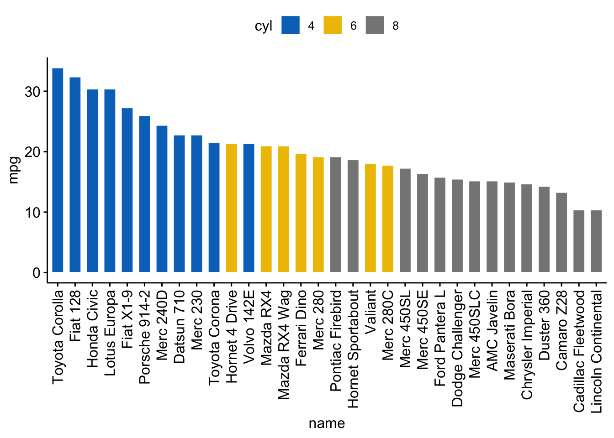
sort.by.groups = TRUEを入れると，グループ内で並び替えが行われます。
12.3.1 偏差グラフ
偏差グラフは，定量的な値の偏差を参照値に対して表します。 つまり，基準となる値からの差をグラフにしたものです。 以下のRコードでは，mtcarsデータセットからmpgのzスコアをプロットします。
dfm <- dfm |>
mutate(
mpg_z = ( mpg - mean(mpg)) / sd(mpg), # 標準化
mpg_grp = factor( # 因子化
ifelse(mpg_z < 0, "low", "high"),
levels = c("low", "high")
)
)
# データの確認
head(dfm[, c("wt", "mpg", "mpg_z", "mpg_grp", "cyl")]) |>
knitr::kable(align='ccccc') |>
kableExtra::kable_styling(font_size = 10)| wt | mpg | mpg_z | mpg_grp | cyl | |
|---|---|---|---|---|---|
| Mazda RX4 | 2.620 | 21.0 | 0.1508848 | high | 6 |
| Mazda RX4 Wag | 2.875 | 21.0 | 0.1508848 | high | 6 |
| Datsun 710 | 2.320 | 22.8 | 0.4495434 | high | 4 |
| Hornet 4 Drive | 3.215 | 21.4 | 0.2172534 | high | 6 |
| Hornet Sportabout | 3.440 | 18.7 | -0.2307345 | low | 8 |
| Valiant | 3.460 | 18.1 | -0.3302874 | low | 6 |
順序のある棒グラフを作成してみます。 燃費を表すmpgの水準で色を変えます。 rotate = TRUEとすることで，グラフを90度回転させます。
ggbarplot(dfm, x = "name", y = "mpg_z", # 軸の設定
fill = "mpg_grp", # `mpg_grp`で色分け
color = "white", # 枠は白
palette = "jco", # jcoパレット
sort.val = "desc", # 降順で並び替え
sort.by.groups = FALSE, # グループ内並び替えしない
x.text.angle = 90, # x軸ラベルを90度回転
ylab = "MPG z-score", # Y軸ラベル
xlab = FALSE, # x軸は非表示
legend.title = "MPG Group", # グラフタイトル
rotate = TRUE,
ggtheme = theme_few()
)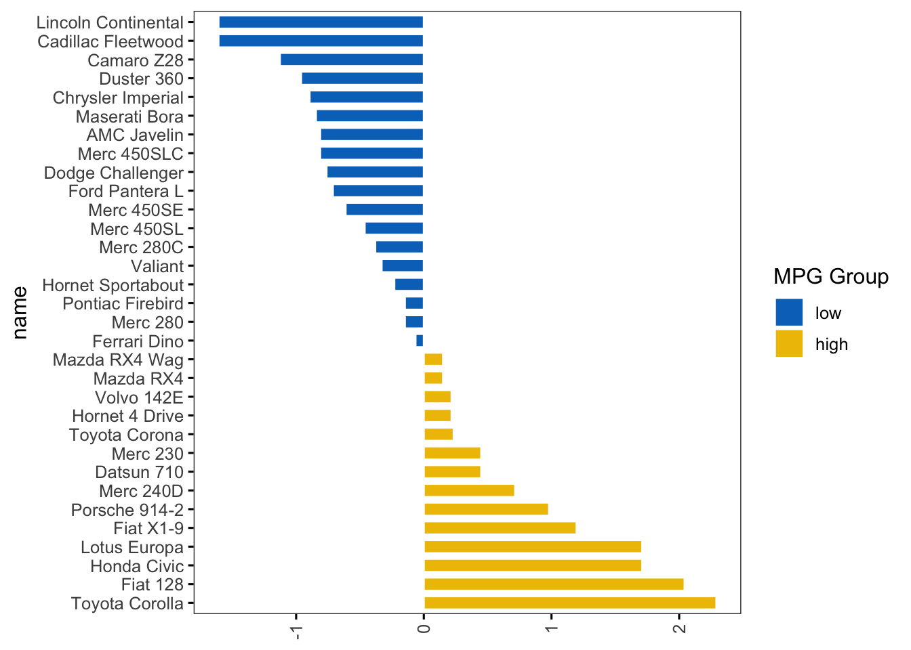
12.3.2 ロリポップチャート
ロリポップチャートは，名前のとおりキャンディーのような形をした棒グラフの一種です。 可視化したいデータセットに大きな値のある場合に，棒グラフの代わりに用いることができます。 ロリポップチャートは，ggdotchart()関数を使って作成します。
ggdotchart(dfm, x = "name", y = "mpg", # 軸の設定
color = "cyl", # cylで色分け
palette = c("#00AFBB", "#E7B800", "#FC4E07"), # 色を指定
sorting = "ascending", # 降順で並び替え
add = "segments", # y切片からドットまでセグメント追加
ggtheme = theme_pubr() # ggplot2テーマ
)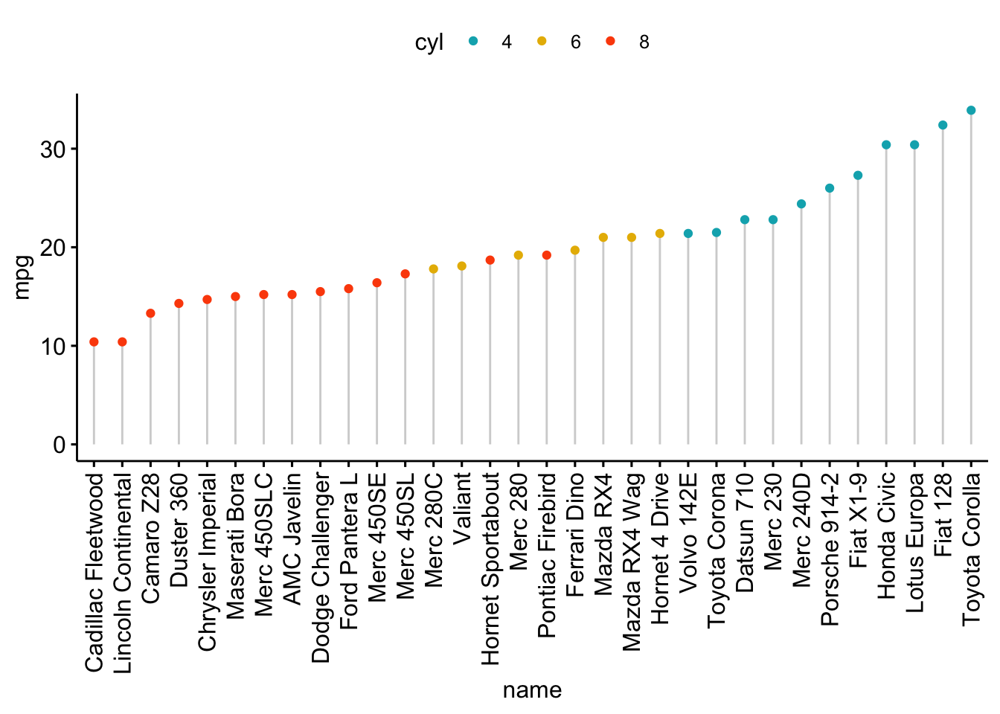
同様に，見た目を変えたグラフとして，クリーブランド・ドットプロット(Cleveland’s dot plot)があります。
ggdotchart(dfm, x = "name", y = "mpg", # 軸の設定
color = "cyl", # cylで色分け
palette = c("#00AFBB", "#E7B800", "#FC4E07"), # 色を指定
sorting = "descending", # 降順で並び替え
rotate = TRUE, # 90度回転
dot.size = 2, # ドットのサイズ
y.text.col = TRUE, # Color y text by groups
ggtheme = theme_pubr() # ggplot2 テーマ
) +
theme_cleveland() # クリーブランドWarning: Vectorized input to `element_text()` is not officially supported.
ℹ Results may be unexpected or may change in future versions of ggplot2.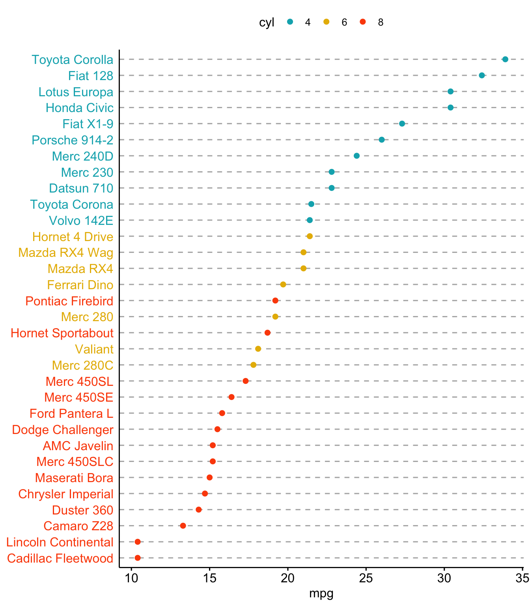
学術的には全く推奨されていないけれど，よく使われるグラフに円グラフがあります。 円グラフは，ggpie()関数で作成できます。
df <- data.frame(
name = c("A", "B", "C"),
value = c(10, 20, 30)
)
ggpie(df,
x = "value",
label = "value",
lab.pos = "in", # ラベルの位置
palette = c("#00AFBB", "#E7B800", "#FC4E07"),
lab.font = c(12, "bold", "white"), # ラベルのフォント
fill = "name",
size = 1,
main = "Pie chart of value"
)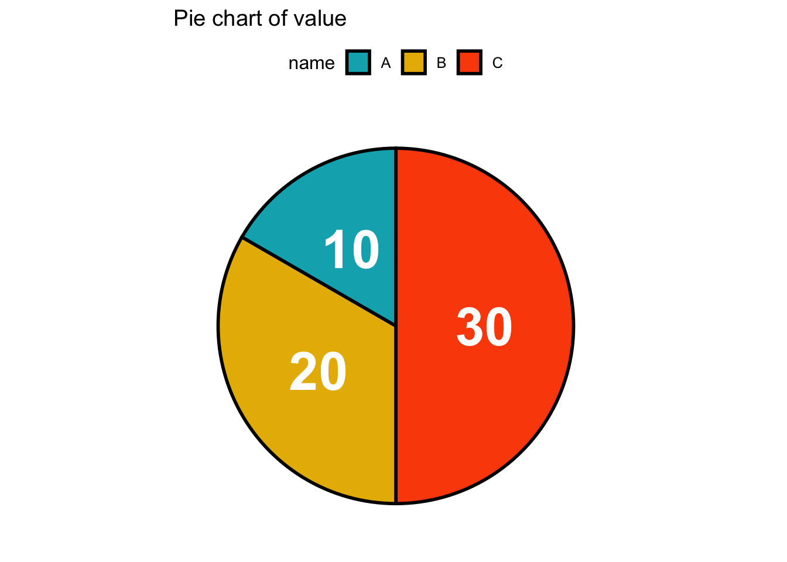
ただ円グラフは結局数字を見ないと正確な情報が分からないため，あまり使わないほうがよいです。大まかにシェアや割合を見たい場合は，積み上げ棒グラフを使うとよいでしょう。
df <- data.frame(
name = c("A", "B", "C"),
value = c(10, 20, 30),
group = c(1,1,1)
)
ggbarplot(df,
x = "group",
y = "value",
fill = "name",
palette = c("#00AFBB", "#E7B800", "#FC4E07"),
ggtheme = theme_pubr(),
show.legend = FALSE
) + coord_flip()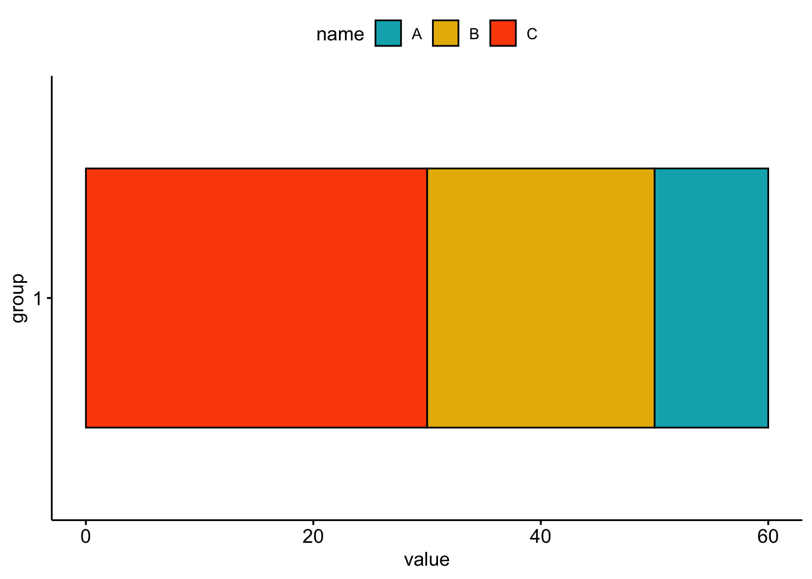